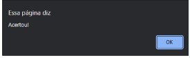
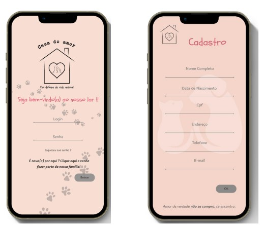
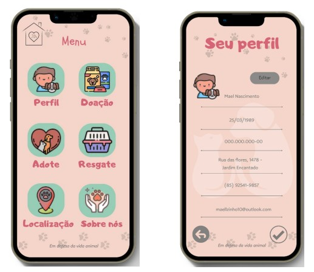

O objetivo do jogo é que o usuário clique no alvo antes que este desapareça. Este alvo se move aleatoriamente na tela, pulando entre as posições dentro do canvas. O alvo, a cada 1 segundo ou milissegundo, é plotado em diversas posições na tela. Sendo assim, há uma função para desenhar o alvo, em determinados intervalos de tempo, e o fará com base em posições aleatórias.
em looping:
Temos nosso alvo pulando entre pontos aleatórios na página. O objetivo do jogo é que o usuário clique no alvo antes que este desapareça. Ao clicar no centro do alvo, surge um pop up com a mensagem "acertou!".
Se clicarmos em qualquer outro ponto, nada acontece
Aplicativo de uma ONG de animais - intitulada Casa do amor - em que nele o usuário pode adotar seus novos amigos, realizar doações, entrar em contato com a ONG para fazer o resgate de animais abandonados ou em situação de perigo. Além disso, conta com a localização e dados para contato da organização.
Após concluir seu cadastro o usuário será direcionado à tela MENU. Onde encontrará todas as opções destinadas a ele dentro do aplicativo.
